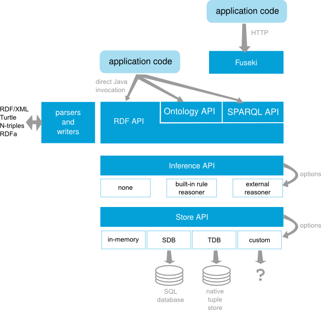

3,030 words in total, 14 minutes required. 图谱实践笔记第二篇：SPARQL；重要摘抄来源[6]。 RDBMS to RDFdirect mapping 数据库的表作为本体中的类（Class）。比如我们在mysql中保存的数据，一共有5张表。那么通过映射后，我们的本体就有5个类了，而不是我们自己定义的三个类。 表的列作为属性（Property）。 表的行作为实例/资源。 表的单元格值为字面量（Literal） 如果单元格所在的列是外键，那么其值为IRI，或者说实体/资源。更多参照文献[1]。 R2RML:更灵活的编辑和设置映射规则，参见文献[2]。R2RML也支持SQL语句来对查询结果进行映射。 图数据库图数据库很多，其中开源的如RDF4j、gStore等。商业数据库如Virtuoso、AllegroGraph、Stardog等。原生图数据库如Neo4j、OrientDB、Titan等。 RDF4j是处理RDF数据的Java框架，使用简单可用的API来实现RDF存储。支持SPARQL 查询和两种RDF存储机制，支持所有主流的RDF格式。 gStore从图数据库角度存储和检索RDF知识图谱数据， gStore支持W3C定义的SPARQL 1.1标准，包括含有Union, OPTIONAL, FILTER和聚集函数的查询；gStore支持有效的增删改操作。gStore单机可以支持1 Billion 三元组规模的RDF知识图谱的数据管理任务。 Virtuoso 智能数据，可视化与整合。可扩展和高性能数据管理，支持Web扩展和安全 AllegroGraph是一个现代的高性能的，支持永久存储的图数据库。它基于Restful接入支持多语言编程。具有强大的加载速度、查询速度和高性能。 Neo4j是一个高性能的,NOSQL图形数据库，它将结构化数据存储在网络上而不是表中。它是一个嵌入式的、基于磁盘的、具备完全的事务特性的Java持久化引擎，但是它将结构化数据存储在网络上而不是表中。Neo4j也可以被看作是一个高性能的图引擎，该引擎具有成熟数据库的所有特性。内置Cypher查询语言。 图数据库 + Lucene索引 支持图属性 支持ACID 高可用性 SPARQLSPARQL即SPARQL Protocol and RDF Query Language的递归缩写，专门用于访问和操作RDF数据，是语义网的核心技术之一（另外两大为RDFS和OWL），其由两个部分组成：协议和查询语言。 查询语言很好理解，就像SQL用于查询关系数据库中的数据，XQuery用于查询XML数据，SPARQL用于查询RDF数据。 协议是指我们可以通过HTTP协议在客户端和SPARQL服务器（SPARQL endpoint）之间传输查询和结果，这也是和其他查询语言最大的区别。 SPARQL查询是基于图匹配的思想，SPARQL查询分为三个步骤： 构建查询图模式（图模式中，每个RDF用英文句号进行分割），表现形式就是带有变量的RDF。 匹配，匹配到符合指定图模式的子图。 绑定，将结果绑定到查询图模式对应的变量上。 SPARQL的部分关键词： SELECT，指定我们要查询的变量。在这里我们查询所有的变量，用*代替。 WHERE，指定我们要查询的图模式。含义上和SQL的WHERE没有区别。 FROM，指定查询的RDF数据集。我们这里只有一个图，因此省去了FROM关键词。 PREFIX，用于IRI的缩写。 关于知识图谱，有一个非常重要的概念，即开放世界假定（Open-world assumption，OWA）。这个假定的意思是当前没有陈述的事情是未知的，或者说知识图谱没有包含的信息是未知的。即，我们要承认知识图谱的信息本身就是残缺的。人和知识图谱类似，我们都存在于OWA的世界中。 SPARQL EndpointSPARQL endpoint是SPARQL协议的一部分，用于处理客户端的请求，可以类比web server提供用户浏览网页的服务。通过endpoint，我们可以把数据发布在网上，供用户查询。 SPARQL Wrapper我们希望将SPARQL查询集成在代码当中，对其进行包装便于后续开发。例如Python第三方库：SPARQLWrapper。 SPARQL语法查询某一歌手所唱的所有歌曲12345SELECT DISTINCT ?trackIDWHERE { ?trackID track_artist artistID} 查询某一位歌手所有歌曲的歌曲名123456SELECT ?nameWHERE { ?trackID track_artist artistID . ?trackID track_name ?name} 使用CONCAT关键字进行连接12345678SELECT ?歌曲id ?专辑id (CONCAT("专辑 名",":",?专辑名) AS ?专辑信息)WHERE { ?歌曲id track_name track_name . ?歌曲id track_album ?专辑id . ?专辑id album_name ?专辑名}")) LIMIT 关键字限制查询结果的条数123456789SELECT ?trackIDWHERE { ?albumID album_name album_name . ?trackID track_album ?albumID}LIMIT 2 使用COUNT进行计数123456SELECT (COUNT(?trackID) AS ?num)WHERE { ?albumID album_name album_name . ?trackID track_album ?albumID} 使用DISTINCT去重123456SELECT DISTINCT ?tag_nameWHERE { ?trackID track_artist artistID . ?trackID track_tag ?tag_name} ORDER BY排序1234567SELECT DISTINCT ?tag_nameWHERE { ?trackID track_artist artistID . ?trackID track_tag ?tag_name}ORDER BY DESC(?tag_name) UNION进行联合查询1234567891011SELECT (COUNT(?trackID ) AS ?num)WHERE { { ?trackID track_tag tag_name . } UNION { ?trackID track_tag tag_name2 . }} 使用FILTER对结果进行过滤1234567SELECT (count(?trackID ) as ?num)WHERE { ?trackID track_tag ?trag_name FILTER (?tag_name = tag_name1 || ?tag_name = tag_name2)} ASK来询问是否存在,回答结果只有True或False12345ASK{ ?trackID track_name ?track_name . FILTER regex(?track_name,‖xx‖)} 使用INSERT DATA操作，对数据的属性和事例进行添加1234INSERT DATA{ artistID artist_name artist_name .} 使用WHERE定位，DELETE删除事例12345678DELETE{ artistID artist_name ?x .}WHERE{ artistID artist_name ?x .} Apache JenaJena是一个开源的Java语义网框架（open source Semantic Web Framework for Java），用于构建语义网和链接数据应用。 Jena 架构图 TDB是Jena用于存储RDF的组件（Native Tuple Store），是属于存储层面的技术。在单机情况下，它能够提供非常高的RDF存储性能。目前TDB的最新版本是TDB2，且与TDB1不兼容。 Jena提供了RDFS、OWL和通用规则推理机。其实Jena的RDFS和OWL推理机也是通过Jena自身的通用规则推理机实现的。 Fuseki是Jena提供的SPARQL服务器，也就是SPARQL Endpoint。其提供了四种运行模式：单机运行、作为系统的一个服务运行、作为web应用运行或者作为一个嵌入式服务器运行。 RDF triples and graphs, and their various components, are accessed through Jena’s RDF API. Typical abstractions here are Resource representing an RDF resource (whether named with a URI or anonymous), Literal for data values (numbers, strings, dates, etc), Statement representing an RDF triple and Model representing the whole graph. The RDF API has basic facilities for adding and removing triples to graphs and finding triples that match particular patterns.[3] 在下载完apache-jena后，进入 Jena 文件夹的 bin/，运行： ./tdbloader —loc=”../tdb/“ “path/to/NTriples” 将 NTriples 加载到TDB中。其中 –loc 指定 tdb的存储位置。第二个参数是我们通过d2rq等工具生成的nt文件。 常用API参见以下，更多参见[4]。 Creating RDFsJena创建RDF示例 123456789101112131415161718// some definitionsString personURI = "http://somewhere/JohnSmith";String givenName = "John";String familyName = "Smith";String fullName = givenName + " " + familyName;// create an empty ModelModel model = ModelFactory.createDefaultModel();// create the resource// and add the properties cascading styleResource johnSmith = model.createResource(personURI) .addProperty(VCARD.FN, fullName) .addProperty(VCARD.N, model.createResource() .addProperty(VCARD.Given, givenName) .addProperty(VCARD.Family, familyName)); StatementsAn RDF Model is represented as a set of statements. Because a Model is set of statements, adding a duplicate of a statement has no effect.The Jena model interface defines a listStatements() method which returns an StmtIterator, a subtype of Java’s Iterator over all the statements in a Model.StmtIterator has a method nextStatement() which returns the next statement from the iterator (the same one that next() would deliver, already cast to Statement). 123456789101112131415161718192021// list the statements in the ModelStmtIterator iter = model.listStatements();// print out the predicate, subject and object of each statementwhile (iter.hasNext()) { Statement stmt = iter.nextStatement(); // get next statement Resource subject = stmt.getSubject(); // get the subject Property predicate = stmt.getPredicate(); // get the predicate RDFNode object = stmt.getObject(); // get the object System.out.print(subject.toString()); System.out.print(" " + predicate.toString() + " "); if (object instanceof Resource) { System.out.print(object.toString()); } else { // object is a literal System.out.print(" \"" + object.toString() + "\""); } System.out.println(" .");} Write and Read12345678// now write the model in XML form to a filemodel.write(System.out);// now write the model in XML form to a filemodel.write(System.out, "RDF/XML-ABBREV");// now write the model in N-TRIPLES form to a filemodel.write(System.out, "N-TRIPLES"); 123456789101112131415// create an empty modelModel model = ModelFactory.createDefaultModel();// use the FileManager to find the input fileInputStream in = FileManager.get().open( inputFileName );if (in == null) { throw new IllegalArgumentException( "File: " + inputFileName + " not found");}// read the RDF/XML file The second argument to the read() method call is the URI which will be used for resolving relative URI's.model.read(in, null);// write it to standard outmodel.write(System.out); Navigating a Model1234567891011121314151617181920212223242526// retrieve the John Smith vcard resource from the modelResource vcard = model.getResource(johnSmithURI);// retrieve the value of the N propertyResource name = (Resource) vcard.getProperty(VCARD.N) .getObject();// retrieve the value of the N propertyResource name = vcard.getProperty(VCARD.N) .getResource();// retrieve the given name propertyString fullName = vcard.getProperty(VCARD.FN) .getString();// add two nickname properties to vcardvcard.addProperty(VCARD.NICKNAME, "Smithy") .addProperty(VCARD.NICKNAME, "Adman");// list the nicknamesStmtIterator iter = vcard.listProperties(VCARD.NICKNAME);while (iter.hasNext()) { System.out.println(" " + iter.nextStatement() .getObject() .toString());} Querying a Model12345//select all statements with a subject that matches subject, a predicate that matches predicate and an object that matches objectSelector selector = new SimpleSelector(subject, predicate, object);// only predicate takes effectSelector selector = new SimpleSelector(null, VCARD.FN, null); listStatements( S, P, O ) is equivalent to listStatements( new SimpleSelector( S, P, O ) ). 1234567// select all the resources with a VCARD.FN property// whose value ends with "Smith"StmtIterator iter = model.listStatements( new SimpleSelector(null, VCARD.FN, (RDFNode) null) { public boolean selects(Statement s) {return s.getString().endsWith("Smith");} }); Model Operations123456789// read the RDF/XML filesmodel1.read(new InputStreamReader(in1), "");model2.read(new InputStreamReader(in2), "");// merge the ModelsModel model = model1.union(model2);// print the Model as RDF/XMLmodel.write(system.out, "RDF/XML-ABBREV"); The intersection and difference of the Models can be computed in a similar manner, using the methods .intersection(Model) and .difference(Model). ContainersRDF defines a special kind of resources for representing collections of things. These resources are called containers. The members of a container can be either literals or resources. There are three kinds of container: a BAG is an unordered collection an ALT is an unordered collection intended to represent alternatives a SEQ is an ordered collection Literal and Datatypes12345678910// create the resourceResource r = model.createResource();// add the propertyr.addProperty(RDFS.label, model.createLiteral("chat", "en")) .addProperty(RDFS.label, model.createLiteral("chat", "fr")) .addProperty(RDFS.label, model.createLiteral("<em>chat</em>", true));// write out the Modelmodel.write(system.out); 12345678910<rdf:RDF xmlns:rdf='http://www.w3.org/1999/02/22-rdf-syntax-ns#' xmlns:rdfs='http://www.w3.org/2000/01/rdf-schema#' > <rdf:Description rdf:nodeID="A0"> <rdfs:label xml:lang='en'>chat</rdfs:label> <rdfs:label xml:lang='fr'>chat</rdfs:label> <rdfs:label rdf:parseType='Literal'><em>chat</em></rdfs:label> </rdf:Description></rdf:RDF> Apache Jena FusekiFuseki是一个SPARQL服务器。它通过HTTP提供使用SPARQL协议的REST式SPARQL HTTP更新，SPARQL查询和SPARQL更新。 Fuseki通过Apache Shiro保证安全性，并且提供了一个用户接口用以服务监控和管理。 Fuseki是基于SPARQL 1.1版本的协议，以及SPARQL图存储协议，进行查询和修改操作。Fuseki是与TDB高度集成的服务，不仅集成了Jena文本查询和Jena空间查询，还提供了一个稳健的业务持久化存储层。对于其他RDF查询和存储系统来说，Fuseki可被用来提供协议引擎。 数据导入数据导入分为两种方式，第一种是通过Fuseki的手动导入，第二种是通过TDB进行导入,对应的命令如下: /jena-fuseki/tdbloader —loc=/jena-fuseki/data filename 数据导入后就可以启动Fuseki了，对应的命令如下: /jena-fuseki/fuseki-server —loc=/jena-fuseki/data —update /alias_name 对于大规模的批量数据，在linux/OSX下可以使用jena带的tdbloader2这个bash脚本来执行bluk load tdbloader2 —loc=/jena-fuseki/data file1 files2 … 注意tdbloader2不支持update的增量更新，增量只能使用tdbloader。 服务启动在apache-jena-fuseki文件夹下，用命令行输入命令java -jar fuseki-server.jar，启动Fuseki服务。 扩展阅读1.rdb-direct-mapping. ↩2.R2RML. ↩3.Jena Architecture. ↩4.Jena APIs. ↩5.Fuseki安装. ↩6.https://zhuanlan.zhihu.com/p/57202859. ↩ ← Previous Post Next Post→ Table of Contents RDBMS to RDF图数据库SPARQLSPARQL EndpointSPARQL WrapperSPARQL语法Apache JenaCreating RDFsStatementsWrite and ReadNavigating a ModelQuerying a ModelModel OperationsContainersLiteral and DatatypesApache Jena Fuseki数据导入服务启动扩展阅读